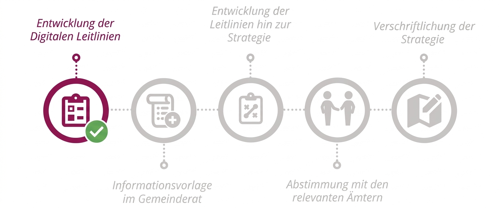

ENTWICKLUNGSPROZESS
Von den Digitalen Leitlinien zur Digitalisierungsstrategie

LEITLINIEN
Die Digitalstrategie besteht aus fünf Leitlinien, mit Zielbeschreibung und dazugehörigen Kennzahlen.
GRUNDLAGE
Das gedankliche Fundament der Digitalstrategie der Stadt Heidelberg bilden die folgenden Strategiepapiere.